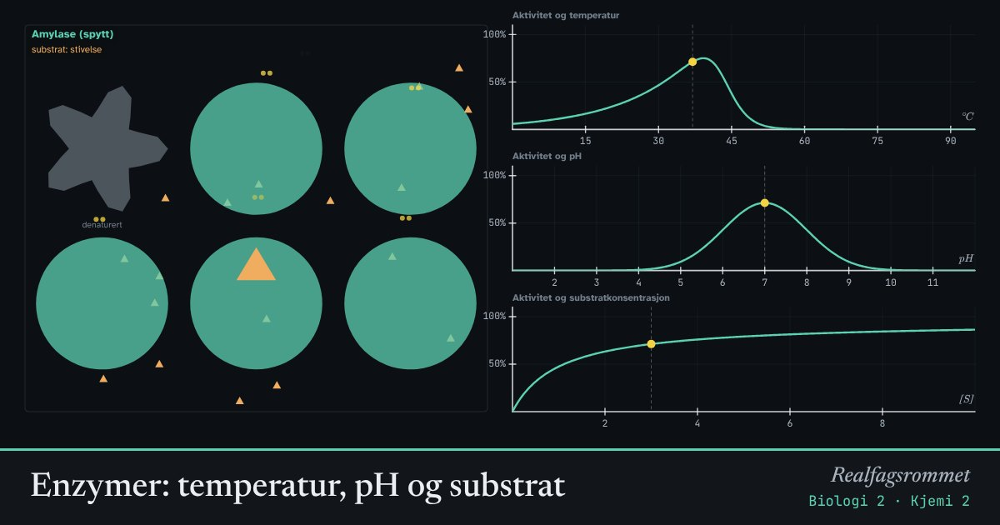

Enzymer: temperatur, pH og substrat
Enzymer er proteiner som får reaksjoner i cellene til å gå mye fortere. Hvert enzym har en form som passer til ett substrat, og det virker best ved en bestemt temperatur og pH.
Start animasjonen
Formler
Om animasjonen
Substratet passer i enzymets aktive sete som en nøkkel i en lås. Når produktet er laget, slipper det taket, og enzymet kan brukes igjen.
Når temperaturen stiger, beveger molekylene seg raskere, og reaksjonen går fortere. Over en viss temperatur endrer enzymet form og slutter å virke: det denatureres. Varmekjære bakterier har enzymer som tåler mye høyere temperatur.
Hvert enzym har sitt pH-optimum. Pepsin virker i den sure magen, trypsin i den basiske tynntarmen.
Med mer substrat går reaksjonen fortere, men bare til alle enzymene er opptatt. Da er farten maksimal. En konkurrerende hemmer konkurrerer om det aktive setet. En ikke-konkurrerende hemmer fester seg et annet sted og ødelegger formen.
Prøv dette
- Finn temperaturoptimum for amylase. Hva skjer over 45 °C?
- Hvorfor slutter pepsin å virke når maten kommer ned i tynntarmen?
- Hvordan kan du skille en konkurrerende fra en ikke-konkurrerende hemmer ved å øke substratkonsentrasjonen?
- Hvorfor brukes Taq-polymerase i PCR?
Kompetansemål
- Kjemi 2: Katalyserte reaksjoner og enzymer
- Kjemi 2: Biologiske makromolekyler
- Biologi 2: Enzymer og metabolisme
Mer om reaksjonsfart, likevekt og energi
- Reaksjonsfart, aktiveringsenergi og katalysatorer
- Kjemisk likevekt og Le Châteliers prinsipp
- Entalpi, entropi og Gibbs fri energi